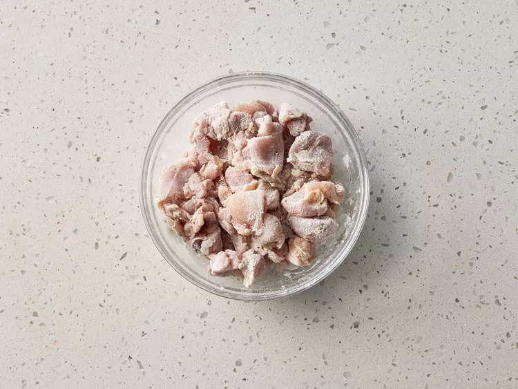
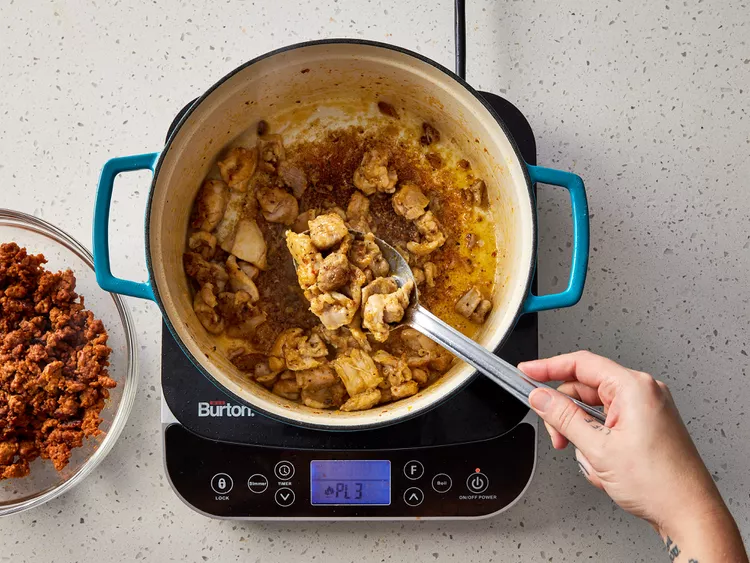

CHICKEN MURPHY

DESCRIPTION
Chicken Murphy is a hearty and flavor-packed stew made with Italian sausage,
chicken thighs, potatoes, mushrooms, and sweet and spicy Peppadew peppers in a
delicious garlic and white wine sauce. It’s comfort food with a kick!
INGREDIENTS
- 1 pound bulk Italian sausage
- 1 pound skinless, boneless chicken thighs, cut into 1-inch cubes
- 1/4 cup all-purpose flour
- 2 tablespoons olive oil, divided
- 1 pound cremini mushrooms, quartered
- 1 onion, chopped
- 1 pepper red bell pepper, cut into 3/4-inch pieces
- 1 green bell pepper, cut in 3/4-inch pieces
- 3 cloves garlic, minced
- 1 1/2 pounds russet potatoes, scrubbed and cubed into 1/2-inch pieces
- 1 cup dry white wine
- 1 cup reduced-sodium chicken broth
- 1/4 cup brine from Peppadew peppers
- 1 teaspoon Italian seasoning
- 3/4 teaspoon salt
- 1 cup Peppadew peppers, halved
- chopped fresh Italian parsley
STEPS
- Gather all ingredients.
- Cook sausage in a 5-to 6-quart Dutch oven over medium heat
until browned, 6 to 8 minutes; transfer to a bowl with a
slotted spoon.
- Place flour in a shallow plate; dredge chicken pieces in
flour to coat.

- Heat 1 tablespoon oil in Dutch oven; add chicken and
cook until lightlybrowned, 4 to 5 minutes. Transfer
chicken to the bowl with sausage.

- Add remaining 1 tablespoon oil to the Dutch oven.Add
mushrooms,onion, and bell peppers. Cook until tender,
6 to 8 minutes.
- Stir in garlic and cook until fragrant, about 1 minute.
- Stir in potatoes, white wine, chicken broth, brine,
Italian seasoning, and salt; bring to a boil. Reduce
heat to medium-low, cover, and simmer until potatoes
are tender, about 10 minutes.
- Add Peppadew peppers and browned chicken and sausage;
cook and stir until heated through and sauce is slightly
thickened, about 3 minutes.
- Sprinkle with parsley before serving.